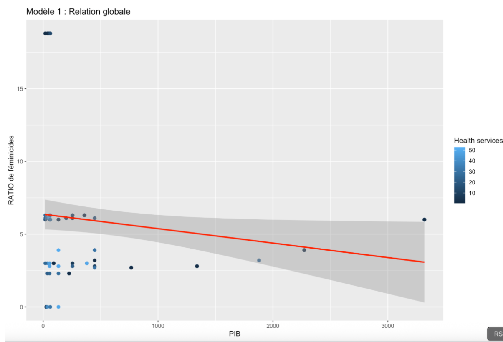
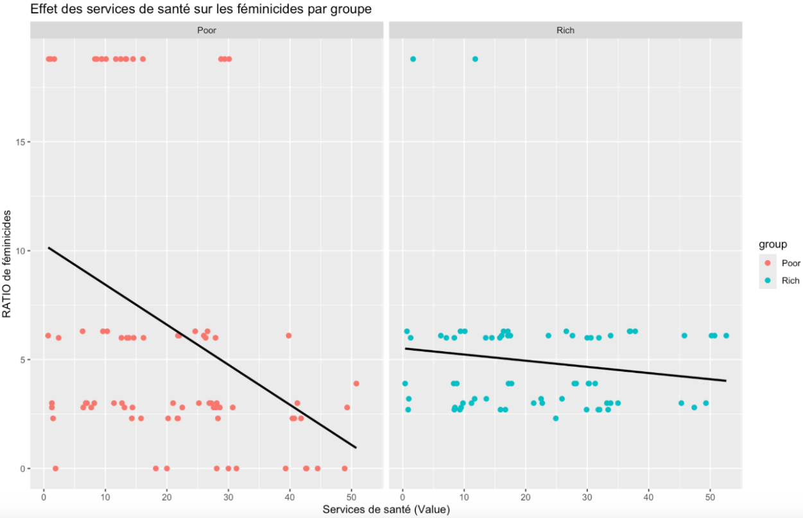

Analyse économique des féminicides en Europe
Les féminicides constituent un enjeu majeur de santé publique, de justice sociale et de politique économique. Ce projet analyse comment la richesse économique des pays, les investissements publics et associatifs, ainsi que la prévalence des violences déclarées influencent les différences de taux de féminicides en Europe.
Objectif du projet
L’objectif est d’évaluer dans quelle mesure :
- la richesse nationale (
gdp) constitue un facteur protecteur ; - les investissements dédiés à la lutte contre les violences (
anti_violence_spend) ont un effet mesurable ; - la prévalence des violences déclarées (
violence_prevalence) est liée au taux de féminicides (femicide_ratio).
Données et préparation
Les données proviennent de sources officielles (Eurostat, EIGE, instituts nationaux, ONG) et couvrent plusieurs pays européens, principalement pour l’année 2021. Les bases ont été fusionnées par pays, les valeurs manquantes imputées (méthode mice) et les colonnes techniques supprimées afin d’obtenir une base finale propre d’environ 148 observations.
Table de correspondance des variables
| Nouveau nom | Signification |
|---|---|
gdp |
Produit Intérieur Brut du pays (milliards d’euros) |
anti_violence_spend |
Investissements publics et associatifs contre les violences faites aux femmes (millions d’euros) |
violence_prevalence |
Pourcentage de femmes déclarant avoir subi des violences |
femicide_rate |
Nombre de féminicides par million d’habitants |
femicide_ratio |
Ratio standardisé des féminicides |
violence_type |
Type de violence (physique, sexuelle, menaces) |
income_group |
Groupe de pays selon le niveau de PIB (Rich vs Poor) |
sex |
Population étudiée (ici : femmes) |
country |
Pays observé |
year |
Année d’observation |
Méthodologie statistique
Plusieurs modèles de régression linéaire ont été estimés pour analyser les déterminants du taux de féminicides :
-
Modèle 1 – Effet de la richesse :
femicide_ratio ~ log(gdp)
Le PIB est négativement et significativement associé au ratio de féminicides : les pays plus riches présentent en moyenne moins de féminicides. -
Modèle 2 – Rôle des violences déclarées :
femicide_ratio ~ log(gdp) + violence_prevalence
La prévalence des violences déclarées améliore la qualité du modèle. Dans les pays où les violences sont davantage déclarées, les institutions semblent plus mobilisées. -
Modèle 3 – Interaction avec le niveau de richesse :
femicide_ratio ~ log(gdp) * income_group
Le PIB reste significatif, mais la distinction Rich vs Poor et l’interaction ne sont pas clairement significatives. -
Modèles sur les investissements :
femicide_ratio ~ log(gdp) + anti_violence_spend
Les investissements sont positivement associés au taux de féminicides, ce qui suggère un effet de causalité inversée : les pays les plus touchés investissent davantage.
Visualisations
Deux visualisations principales illustrent ces résultats :


Principaux enseignements
- La richesse économique (
gdp) est un facteur protecteur important. - La visibilité des violences (
violence_prevalence) joue un rôle clé dans la prévention. - Les investissements (
anti_violence_spend) reflètent souvent la gravité du problème plutôt qu’un effet protecteur direct. - Les différences entre pays renvoient à des facteurs institutionnels, culturels et juridiques.
Compétences mobilisées
- Nettoyage, fusion et imputation de données (R,
dplyr,mice). - Modélisation statistique (régressions linéaires, interactions).
- Visualisation de données (ggplot2).
- Analyse appliquée à l’économie de la santé.